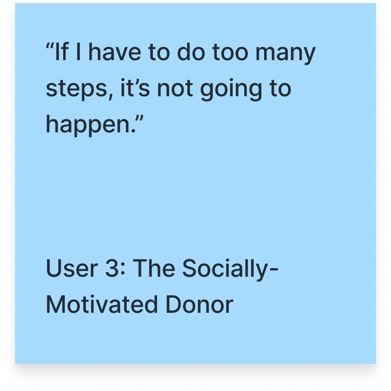
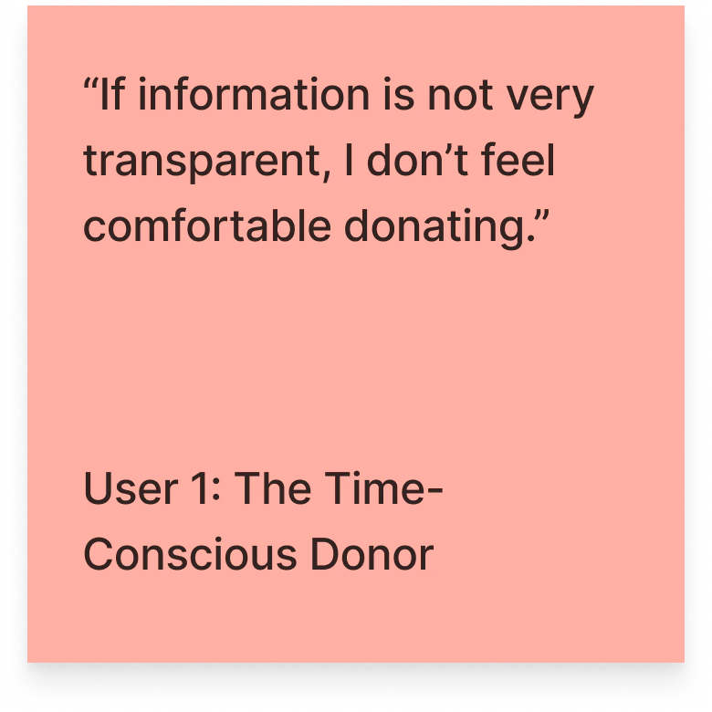
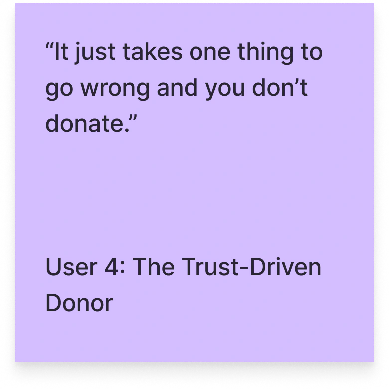
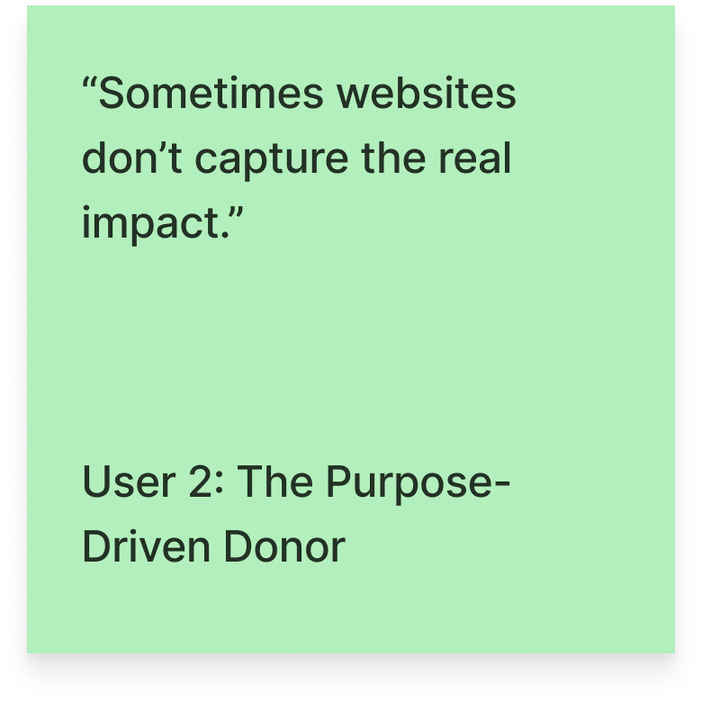
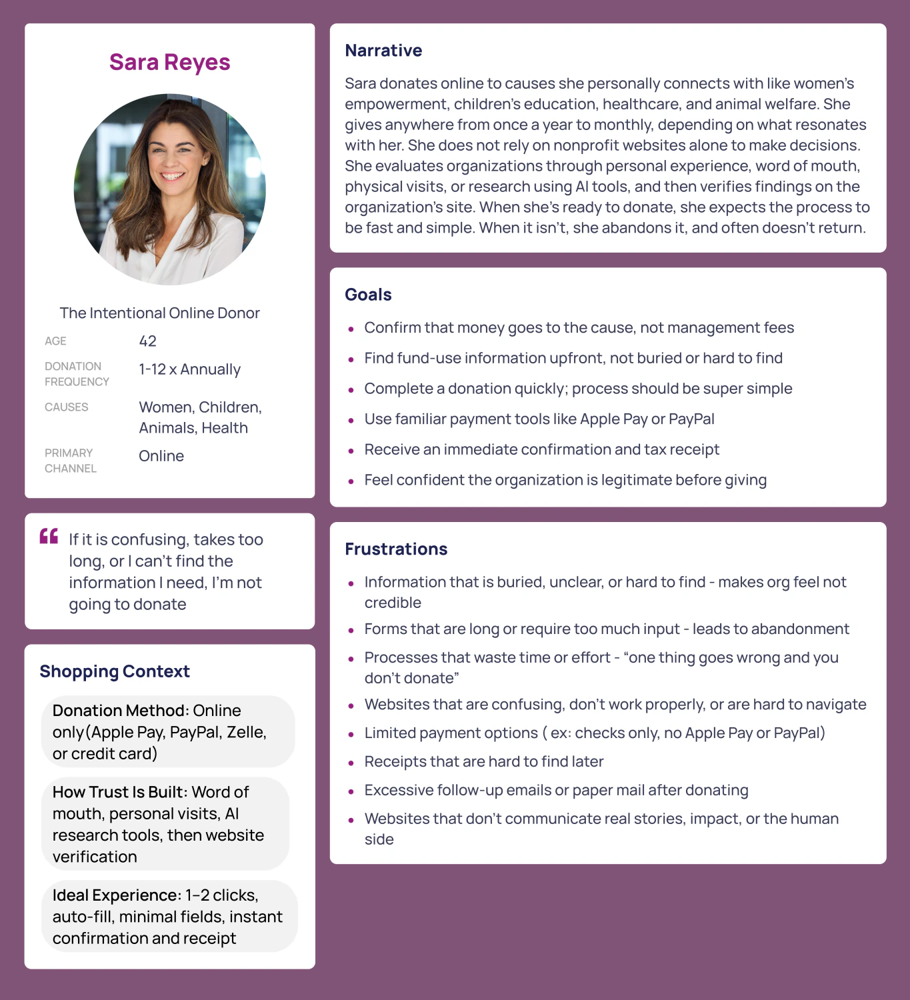
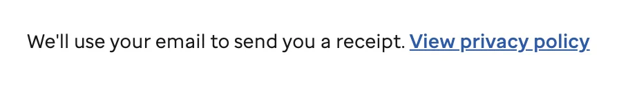
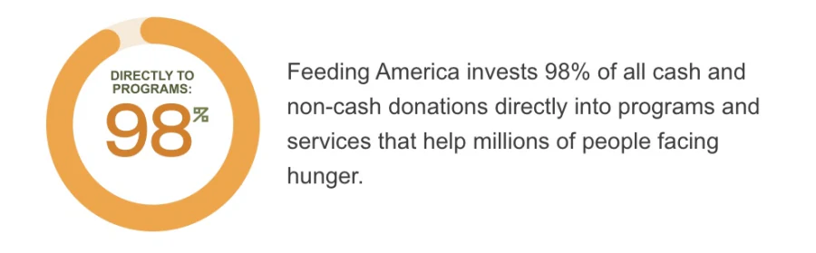
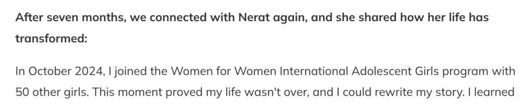
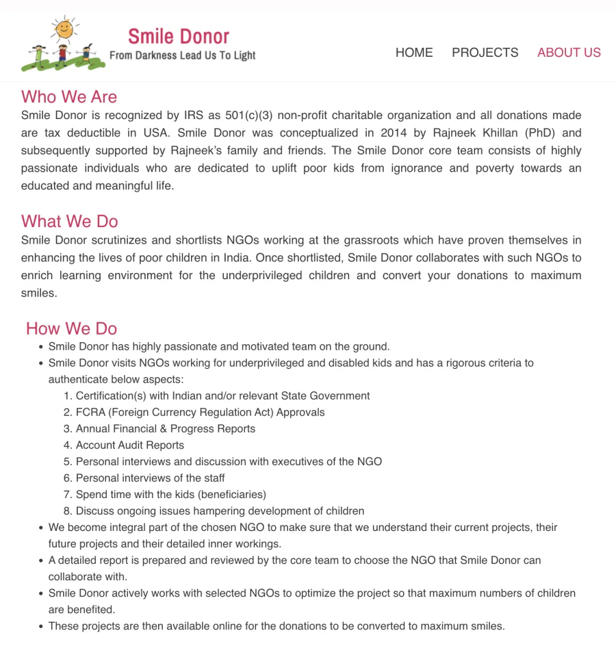

No data, no tracking, no baseline. Just donors.
Before interviewing anyone, I tried to pull existing analytics from Smile Donor. They don't track any. That absence was itself a finding as every design decision on the current site had been made without data, and the redesign would need to be grounded entirely in qualitative research and competitive benchmarking.
I conducted four Zoom interviews with people who had donated to nonprofits online or seriously considered it. They didn't average into one donor. They revealed a spectrum: a time-conscious donor who needed the process under 60 seconds, a purpose-driven donor whose trust came from personal experience with a cause, a socially-motivated donor who gave because of relationships, and a verifier who visited organizations in person before ever giving online. A donation flow has to pass all four inspections at once, fast enough for the first, transparent enough for the last.
One finding cut across all four: no user relied on a website to build trust. They arrived already skeptical, and the website was their last checkpoint, not their first reason to give.




Three of four users said too many steps led to abandonment. Three of four cited limited payment options as a barrier. Two of four pointed to lack of transparency about fund use, and two of four said the absence of a tax receipt or post-donation confirmation added to that frustration. Trust was the number one factor in deciding whether to donate, but friction in the process was just as likely to kill a donation as distrust of the organization itself.
I synthesized the four into a composite persona, Sara Reyes, for the thesis documentation. But the spectrum is the finding: four trust strategies, one flow that has to serve them all.

Hidden in plain text.
I analyzed three established nonprofit sites, St. Jude, Feeding America, and Women for Women International, then evaluated the current Smile Donor site against Nielsen's usability heuristics. The competitor gap was stark: every competitor had preset donation amounts, multiple payment methods, third-party credibility badges, and named beneficiary stories.



Smile Donor had none of these. Its donation form was a single open text field redirecting to an external PayPal page. The form had:
- ✕No fund-use information
- ✕No trust signals
- ✕No receipt confirmation language
The heuristic evaluation sharpened that finding. Smile Donor's strongest trust-building content, its 501(c)(3) status, 0% overhead model, vetting process, and project stories, already existed on the site. It was hidden in long body text and just wasn't where donors needed it. A first-time visitor going straight to the donation form would encounter none of it.

One opportunity emerged that no competitor had addressed: none allowed donors to direct their gift to a specific cause despite showing detailed cause content. Smile Donor already had that content. Directed giving could be a meaningful differentiator.
To bridge research and redesign, I mapped a proposed information architecture and a set of prioritized fixes. The donation flow needed the most work: preset amounts, multiple payment methods, fund-use transparency, and post-donation confirmation were all missing. Smile Donor's existing credibility content needed to move to where donors are actually deciding, not buried elsewhere on the site. Directed giving was scoped as a medium-priority differentiator once the foundation was in place.